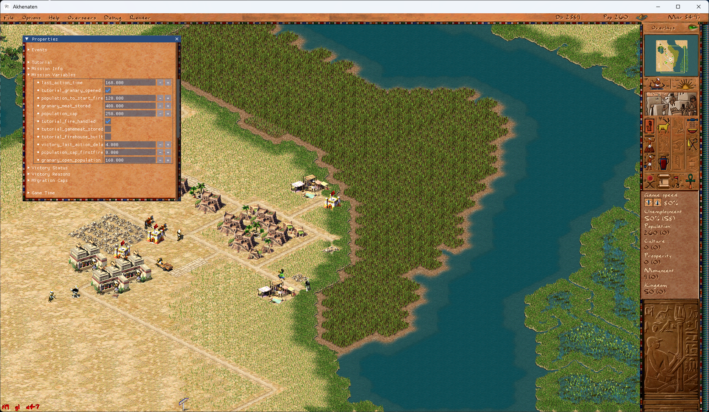
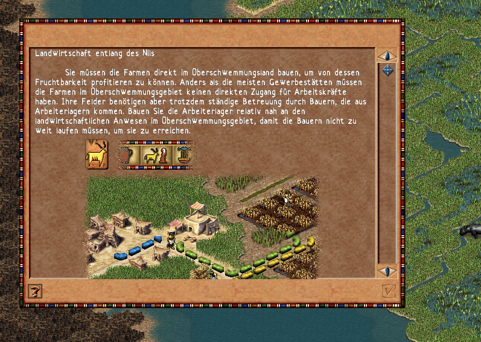
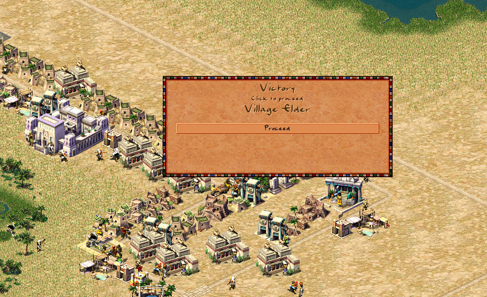
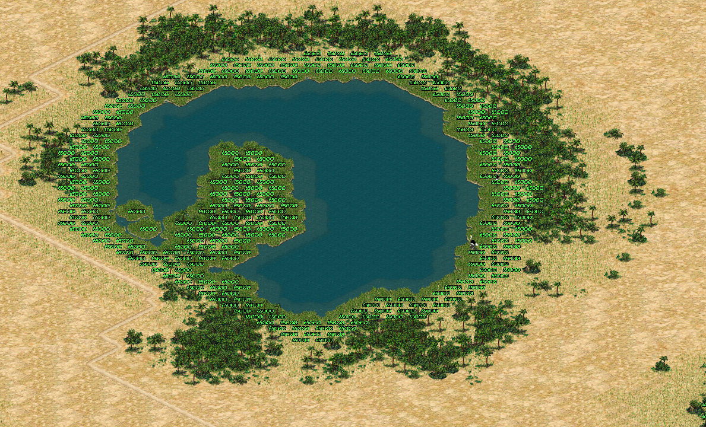
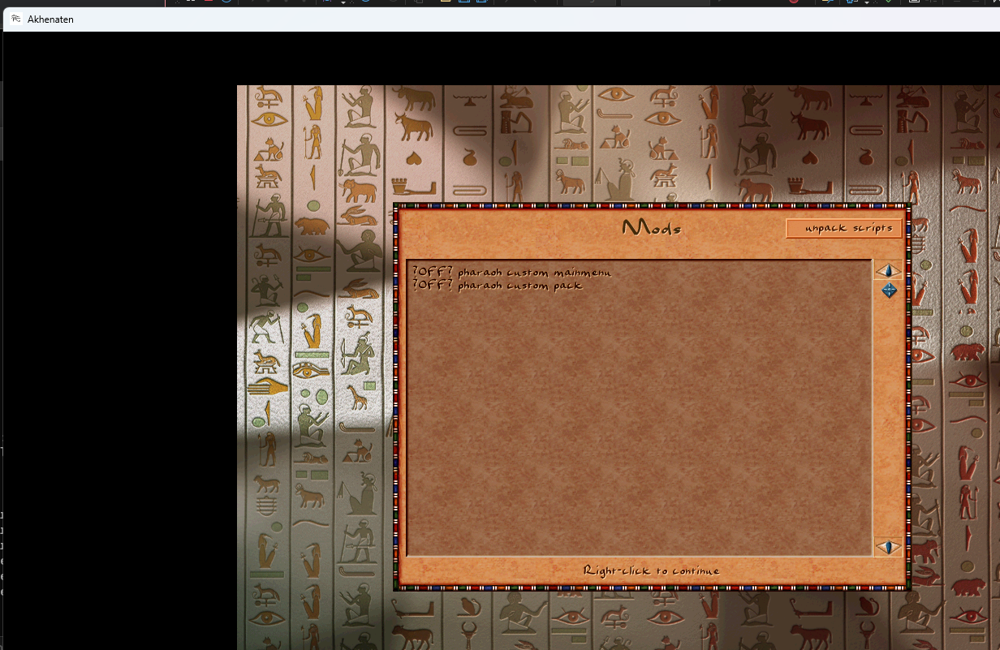
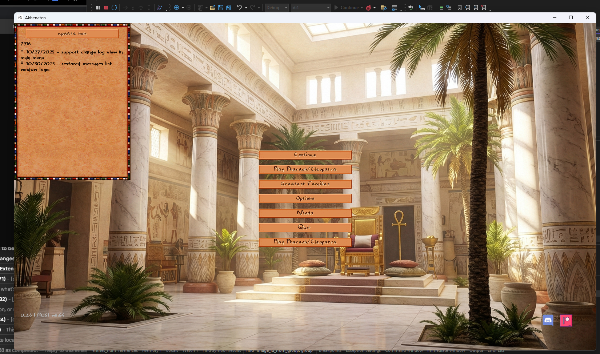

Changes in Akhenaten for 2025
Main Development Directions
- Major architecture refactoring
- Massive migration of logic from C++ to JavaScript configs — all buildings and figures now configured through JS configs
- Simplified data loading system from archives
- New scheme for registering enum tokens in JS
- Unified system for loading structures from configs

Refactoring of Building and Figure Classes
- Extraction of
runtime_datafrom the common building class into specialized classes - Migration of planner logic into building classes
- Simplification of the type casting system for buildings and figures
- Reorganization of figure system with base class extraction

Enemy and Invasion System
- Enemy figure types added: barbarian, hittite, hyksos, kushite, persian, roman, phoenician, nubian, libian, assyrian, seapeople
- Battalion system replacing legions
- Improved enemy army formation logic
- Invasion points system with support for sea and land invasions
- Enemy properties configured through configs
- Enemy strength grid system
- Improved archer logic
- Distant battle system
- Debug window for enemy armies
- City siege event handling
New Language Support
- German language support added
- Spanish language support added
- Migration of all localizations from C++ to JS configs
- Improved font system with Unicode support
- Tools for generating game fonts
- Loading localizations from .sgx archives
- Support for external language directories
- Improved Unicode font rendering

New Building Types
- Carpenter Guild with carpenter figure
- Stonemasons Guild with stonemason figure
- Tower Gatehouse
- Improved logic for Senet House
- Irrigation canals system with improved logic
- Garden system with decay logic
- Improved logic for Temple Complex
- Mastaba system with static parameters support

Resource Depletion System
- Depletion system implemented for all quarry types
- Resource depletion for copper mines
- Depletion system for gems
- Save/load resource state (copper, stone, gems grids)
- New
city_resource_handleclass for simplified resource handling - Improved resource storage logic in buildings
- Mission resource configuration through configs

UI/UX Improvements
- Information window for trade caravans and ships
- Information window for gatehouse
- Information window for forts and legions with formation mode buttons
- Mod manager window
- Event history window
- Political overseer window
- Fixed top menu when resizing window
- Improved scrollbar system
- Dynamic text support for buttons
- Improved tooltips for buildings and figures
- Image centering support in messages
- Improved mission window

Graphics Improvements
- New deferred rendering system with Y-sorting
- Improved cart rendering
- Grayscale support for images
- Cloud system with settings
- Improved isometric texture rendering
- Texture caching for performance improvement
Mod Support
- Ability to download mods from GitHub
- Save/load active mods
- Texture loading support from modpacks
- Improved data loading from .sgx archives
- Automatic start index detection for images

Technical Improvements
- Build support for Bazzite Linux
- Build improvements for macOS (ARM and x86)
- Build improvements for Android
- Fixes for Emscripten/WASM
- System libpng support on macOS
Architectural Improvements
- New type system (
typeidimplementation) stable_arrayclass for hash-sorted arrays- Improved variants system
- New events system
- Improved routing system with amphibian support
Empire System
- Empire system redesign using handles instead of raw numbers
- Improved trade route logic for long intervals
- Fixed trader creation in cities
- Support for creating trade cities under siege
- Risk system now depends on difficulty and house value
- Improved tutorial system
- Support for multiple temple complexes and monuments (optional)
- New tax collection system (optional)
- Improved labor system
Developer Tools
- Sprite tool for viewing game resources
- Improved debugging tools
- Console commands for creating figures and game management
- Font generation tools
- Debug modes for routing
- Debug rendering for canals, gardens, enemies